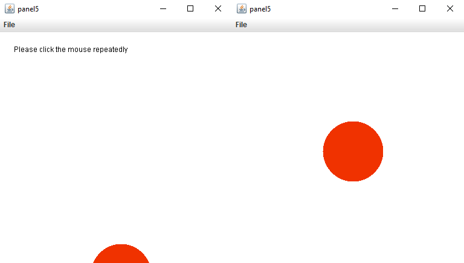

RisingSun is a project in which a red sun appears at the bottom of the
screen, and by clicking anywhere on the screen, the sun will go to whatever
Y-coordinate your mouse cursor is on, while staying in the middle of the X-axis.
Taking your cursor off the screen will reset the program.
